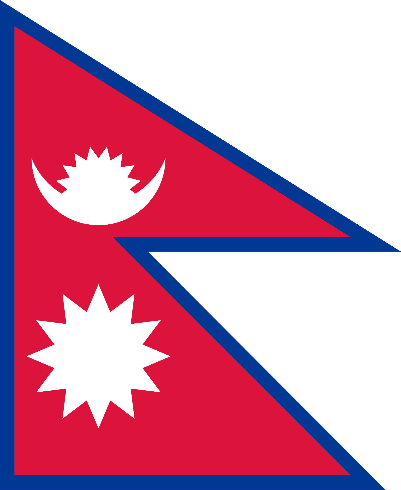
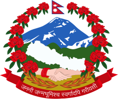
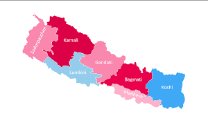
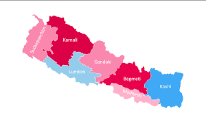

contents
Nepal
Nepal,[a] officially the Federal Democratic Republic of Nepal,[b] is a landlocked country in South Asia. It is mainly situated in the Himalayas, but also includes parts of the Indo-Gangetic Plain. It borders the Tibet Autonomous Region of China to the north, and India to the south, east, and west, while it is narrowly separated from Bangladesh by the Siliguri Corridor, and from Bhutan by the Indian state of Sikkim. Nepal has a diverse geography, including fertile plains, subalpine forested hills, and eight of the world's ten tallest mountains, including Mount Everest, the highest point on Earth. Kathmandu is the nation's capital and the largest city. Nepal is a multi-ethnic, multi-lingual, multi-religious and multi-cultural state, with Nepali as the official language. The name "Nepal" is first recorded in texts from the Vedic period of the Indian subcontinent, the era in ancient Nepal when Hinduism was founded, the predominant religion of the country. In the middle of the first millennium BC, Gautama Buddha, the founder of Buddhism, was born in Lumbini in southern Nepal. Parts of northern Nepal were intertwined with the culture of Tibet. The centrally located Kathmandu Valley is intertwined with the culture of Indo-Aryans, and was the seat of the prosperous Newar confederacy known as Nepal Mandala. The Himalayan branch of the ancient Silk Road was dominated by the valley's traders. The cosmopolitan region developed distinct traditional art and architecture. By the 18th century, the Gorkha Kingdom achieved the unification of Nepal. The Shah dynasty established the Kingdom of Nepal and later formed an alliance with the British Empire, under its Rana dynasty of premiers. The country was never colonised but served as a buffer state between Imperial China and British India. Parliamentary democracy was introduced in 1951 but was twice suspended by Nepalese monarchs, in 1960 and 2005. The Nepalese Civil War in the 1990s and early 2000s resulted in the establishment of a secular republic in 2008, ending the world's last Hindu monarchy. The Constitution of Nepal, adopted in 2015, affirms the country as a secular federal parliamentary republic divided into seven provinces. Nepal was admitted to the United Nations in 1955, and friendship treaties were signed with India in 1950 and China in 1960. Nepal hosts the permanent secretariat of the South Asian Association for Regional Cooperation (SAARC), of which it is a founding member. Nepal is also a member of the Non-Aligned Movement and the Bay of Bengal Initiative.
history
ancient history
By 55,000 years ago, the first modern humans had arrived on the Indian subcontinent from Africa, where they had earlier evolved.[29][30][31] The earliest known modern human remains in South Asia date to about 30,000 years ago.[32] The oldest discovered archaeological evidence of human settlements in Nepal dates to around the same time.[33] After 6500 BC, evidence for the domestication of food crops and animals, construction of permanent structures, and storage of agricultural surplus appeared in Mehrgarh and other sites in what is now Balochistan.[34] These gradually developed into the Indus Valley Civilisation,[35][34] the first urban culture in South Asia.[36] Prehistoric sites of palaeolithic, mesolithic and neolithic origins have been discovered in the Siwalik hills of Dang district.[37] The earliest inhabitants of modern Nepal and adjoining areas are believed to be people from the Indus Valley Civilisation. It is possible that the Dravidian people whose history predates the onset of the Bronze Age in the Indian subcontinent (around 6300 BC) inhabited the area before the arrival of other ethnic groups like the Tibeto-Burmans and Indo-Aryans from across the border.[38] By 4000 BC, the Tibeto-Burmese people had reached Nepal either directly across the Himalayas from Tibet or via Myanmar and north-east India or both.[39] Stella Kramrisch (1964) mentions a substratum of a race of pre-Dravidians and Dravidians, who were in Nepal even before the Newars, who formed the majority of the ancient inhabitants of the valley of Kathmandu.[40]
modern history
In the premises of the Changu Narayan Temple, is a stone inscription dated 464 AD, the first in Nepal since the Ashoka inscription of Lumbini (c. 250 BC). By the late Vedic period, Nepal was being mentioned in various Hindu texts, such as the late Vedic Atharvaveda Pariśiṣṭa and in the post-Vedic Atharvashirsha Upanishad.[41] The Gopal Bansa was the oldest dynasty to be mentioned in various texts as the earliest rulers of the central Himalayan kingdom known by the name 'Nepal'.[42] The Gopalas were followed by Kiratas who ruled for over 16 centuries by some accounts.[43] According to the Mahabharata, the then Kirata king went to take part in the Battle of Kurukshetra. In the south-eastern region, Janakpurdham was the capital of the prosperous kingdom of Videha or Mithila, that extended down to the Ganges, and home to King Janaka and his daughter, Sita. Around 600 BC, small kingdoms and confederations of clans arose in the southern regions of Nepal. From one of these, the Shakya polity, arose a prince who later renounced his status to lead an ascetic life, founded Buddhism, and came to be known as Gautama Buddha (traditionally dated 563–483 BC).[44] Nepal came to be established as a land of spirituality and refuge in the intervening centuries, played an important role in transmitting Buddhism to East Asia via Tibet,[45] and helped preserve Hindu and Buddhist manuscripts. By 250 BC, the southern regions had come under the influence of the Maurya Empire. Emperor Ashoka made a pilgrimage to Lumbini and erected a pillar at Buddha's birthplace, the inscriptions on which mark the starting point for properly recorded history of Nepal.[46] Ashoka also visited the Kathmandu valley and built monuments commemorating Gautama Buddha's visit there. By the 4th century AD, much of Nepal was under the influence of the Gupta Empire.[f][47] In the Kathmandu valley, the Kiratas were pushed eastward by the Licchavis, and the Licchavi dynasty came into power c. 400 AD. The Lichchhavis built monuments and left a series of inscriptions; Nepal's history of the period is pieced together almost entirely from them.[48][45] In 641, Songtsen Gampo of the Tibetan Empire sends Narendradeva back to Licchavi with an army and subjugates Nepal. Parts of Nepal and Licchavi was later under the direct influences of the Tibetan empire.[49] The Licchavi dynasty went into decline in the late 8th century and was followed by a Thakuri rule. Thakuri kings ruled over the country up to the middle of the 11th century AD; not much is known of this period that is often called the dark periodgeography
Fedreal Democratic Republic of Nepal
सङ्घीय लोकतान्त्रिक गणतन्त्र नेपाल
 
Flag Amblem
National anthem
 

Province in Nepal
Madesh Province
Bagmati Province
Gandaki Province
Lumbini Province
Karnali Province
Sudurpachim Province
Religions
Muslim
Christian
Jain
others
Big Cities
Biratnagar
Pokhara
Chitwan
Butwal
Dhangadi
Nepaljung
Jhapa
inaruwar
Ithari
Rajbiraj
Bhaktapur
Lalitpur
3 Reagions
HimalPahard
Tarai
Apperance
Small
Standerd
large
Standerd
wide
Dark
light